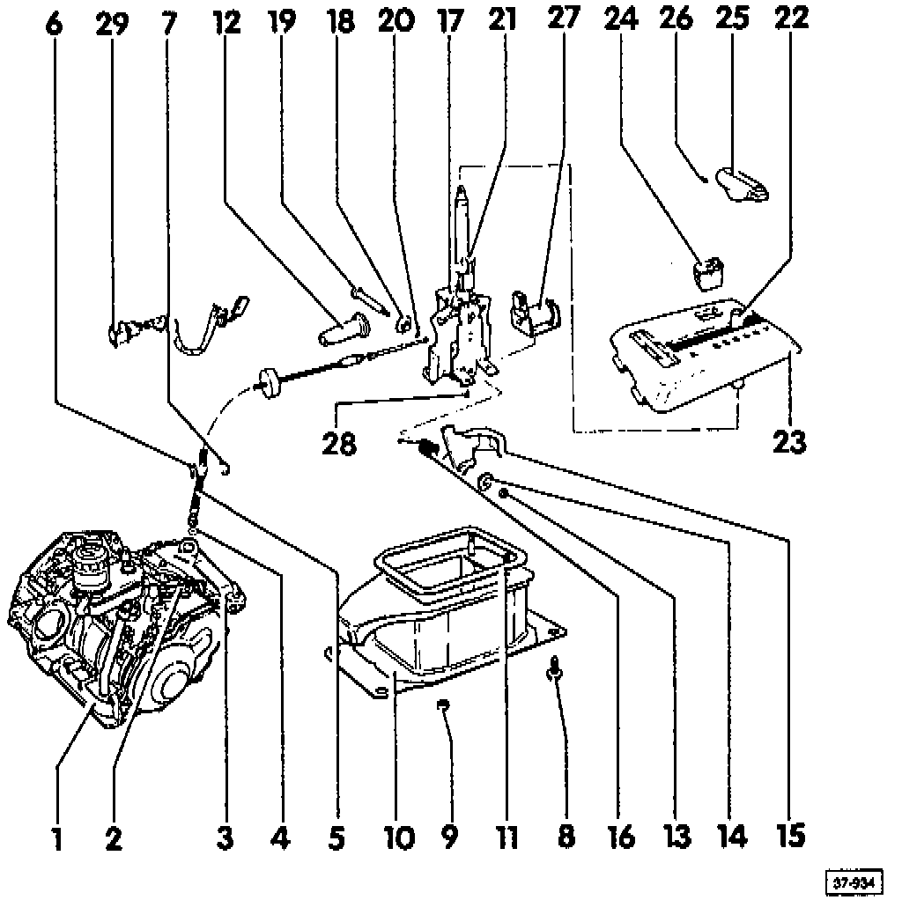

Exploded Views
Shifter And Related Components:

1 - Transmission
2 - Lever for selector cable
3 - Bracket for selector cable
4 - Washer
5 - Selector lever cable
6 - Shoulder screw - 25 Nm (18 ft lb)
7 - Clip for selector lever cable
8 - Bolt 25 Nm (18 ft lb)
9 - Nut 15 Nm (11 ft lb)
10 - Selector support
11 - Gasket always replace
12 - Boot
13 - Nut 10 Nm (7 ft lb)
14 - Bushing
15 - Lock lever locks selector lever in "N" or "P"
16 - Spring
17 - Selector lever assembly
18 - Bushing
19 - Bolt
20 - Clip
21 - Bulb holder
22 - Sleeve
23 - Cover
24 - Program switch - E122
25 - Handle
26 - Set screw
27 - Selector lever lock solenoid
28 - Screw 3 Nm (27 in. lb or 31 cm kg)
29 - Wiring harness for scale illumination and selector lock solenoid - N110